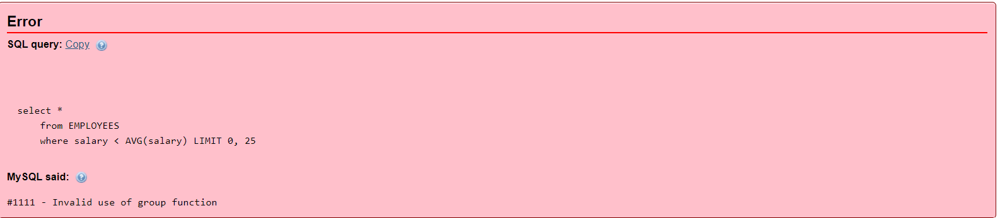
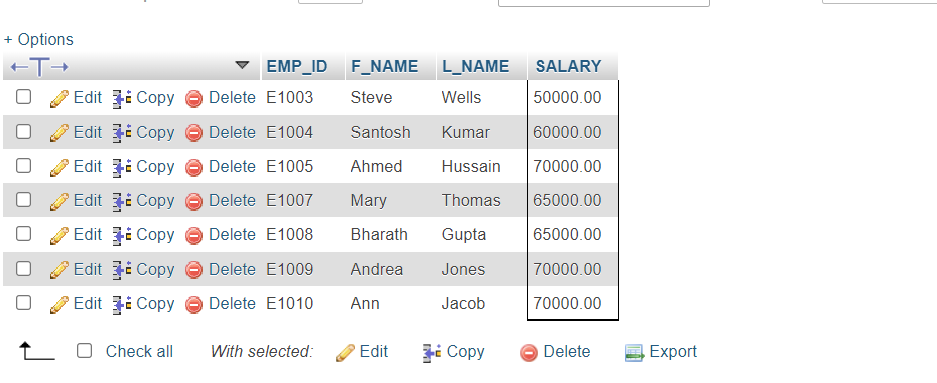
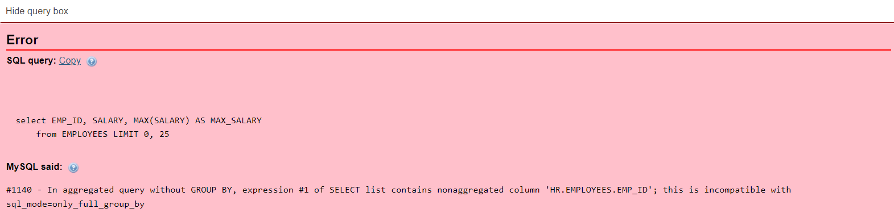
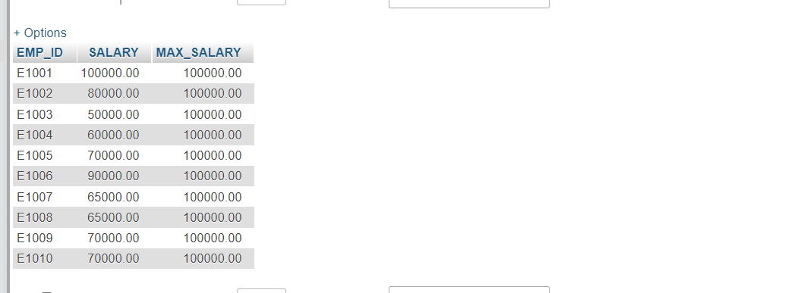
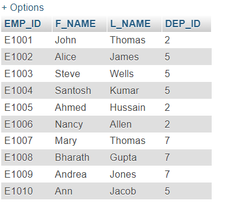

Estimated time needed: 20 minutes
In this lab, you will learn how to create tables and load data in the MySQL database service using the phpMyAdmin graphical user interface (GUI) tool.
In this lab, you will use MySQL. MySQL is a Relational Database Management System (RDBMS) designed to efficiently store, manipulate, and retrieve data.

To complete this lab you will utilize MySQL relational database service available as part of IBM Skills Network Labs (SN Labs) Cloud IDE. SN Labs is a virtual lab environment used in this course.
The database used in this lab is an internal database. You will be working on a sample HR database. This HR database schema consists of 5 tables called EMPLOYEES, JOB_HISTORY, JOBS, DEPARTMENTS and LOCATIONS. Each table has a few rows of sample data. The following diagram shows the tables for the HR database:

After completing this lab you will be able to:
In this lab, you will run through some SQL practice problems that will provide hands-on experience with nested SQL SELECT statements (also known as Sub-queries).
How does a typical Nested SELECT statement syntax look?
jsonSELECT column_name [, column_name ] FROM table1 [, table2 ] WHERE column_name OPERATOR (SELECT column_name [, column_name ] FROM table1 [, table2 ] WHERE condition);
Problem:
Execute a failing query (i.e. one which gives an error) to retrieve all employees records whose salary is lower than the average salary.
Use the AVG aggregate function.
sql
select *
from EMPLOYEES
where salary < AVG(salary);

Problem:
Execute a working query using a sub-select to retrieve all employees records whose salary is lower than the average salary.
Put AVG(SALARY) of the inner SELECT in comparison with SALARY of the outer SELECT.
sql
select EMP_ID, F_NAME, L_NAME, SALARY
from EMPLOYEES
where SALARY < (select AVG(SALARY)
from EMPLOYEES);

Problem:
Execute a failing query (i.e. one which gives an error) to retrieve all employees records with EMP_ID, SALARY and maximum salary as MAX_SALARY in every row.
Use the MAX aggregate function.
n1ql
select EMP_ID, SALARY, MAX(SALARY) AS MAX_SALARY
from EMPLOYEES;

Problem:
Execute a Column Expression that retrieves all employees records with EMP_ID, SALARY and maximum salary as MAX_SALARY in every row.
Use the SELECT (which retrieves MAX(SALARY)) as a column of the other SELECT.
n1ql
select EMP_ID, SALARY, ( select MAX(SALARY) from EMPLOYEES ) AS MAX_SALARY
from EMPLOYEES;

Problem:
Execute a Table Expression for the EMPLOYEES table that excludes columns with sensitive employee data (i.e. does not include columns: SSN, B_DATE, SEX, ADDRESS, SALARY).
Use a SELECT (which retrieves non-sensitive employee data) after FROM of the other SELECT.
n1ql
select * from ( select EMP_ID, F_NAME, L_NAME, DEP_ID from EMPLOYEES) AS EMP4ALL;

If you would like to run all the solution queries of the SQL problems in this lab with a script, download the script below. Import the script to the mysql phpadmin interface and run it. Follow Hands-on Lab : Create tables using SQL scripts and Load data into tables on how to upload a script to mysql phpadmin.
| Date | Version | Changed by | Change Description |
|---|---|---|---|
| 2022-07-27 | 0.2 | Lakshmi Holla | Updated HTML tag |
| 2021-11-01 | 0.1 | Lakshmi Holla, Malika Singla | Initial Version |